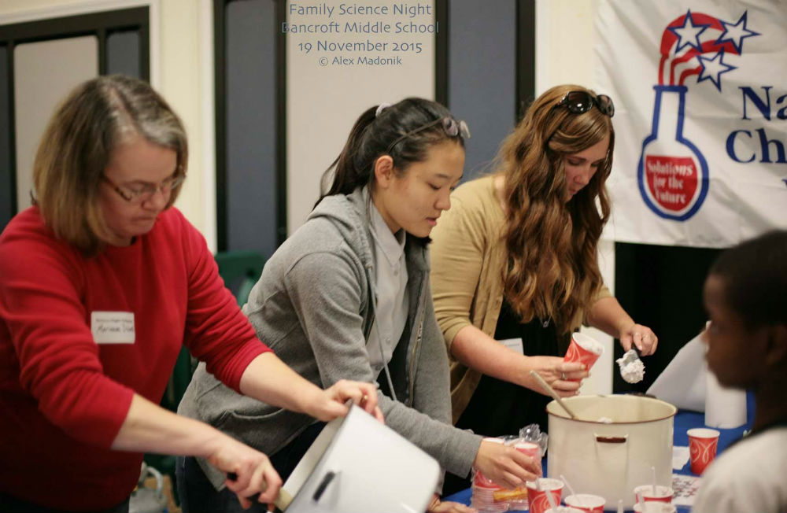
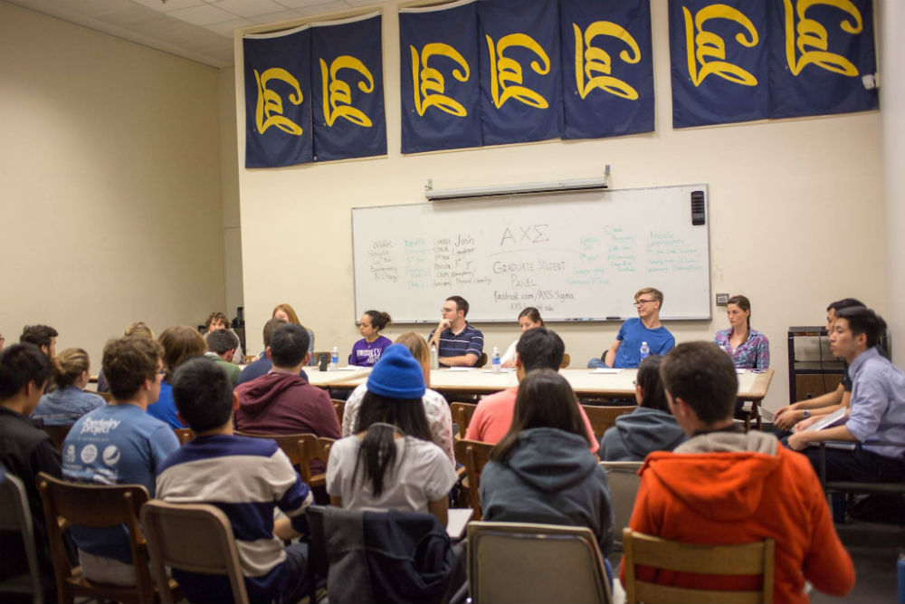
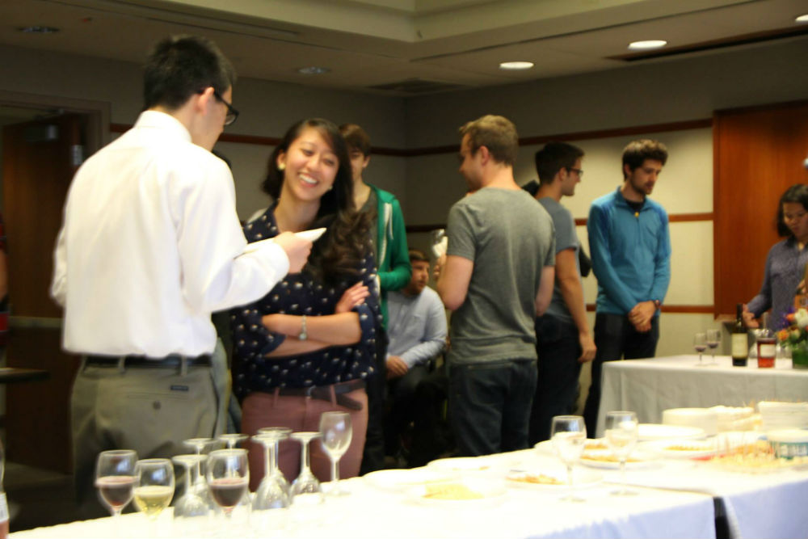
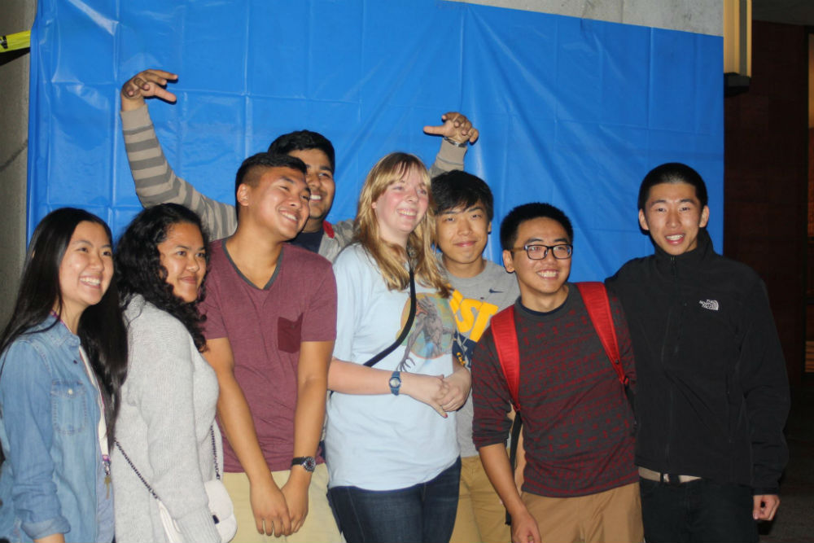
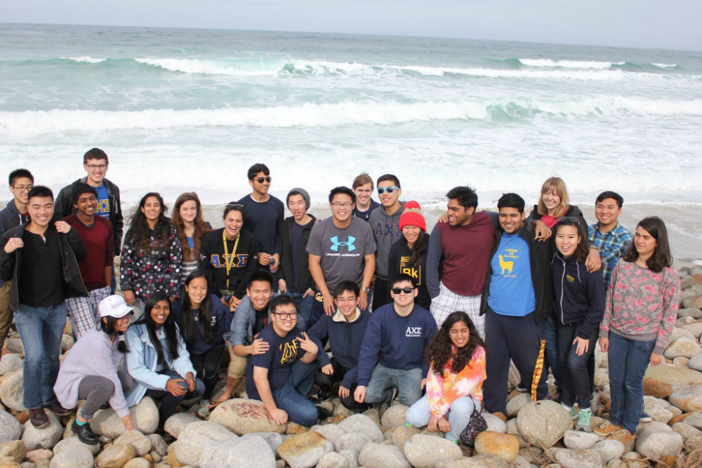
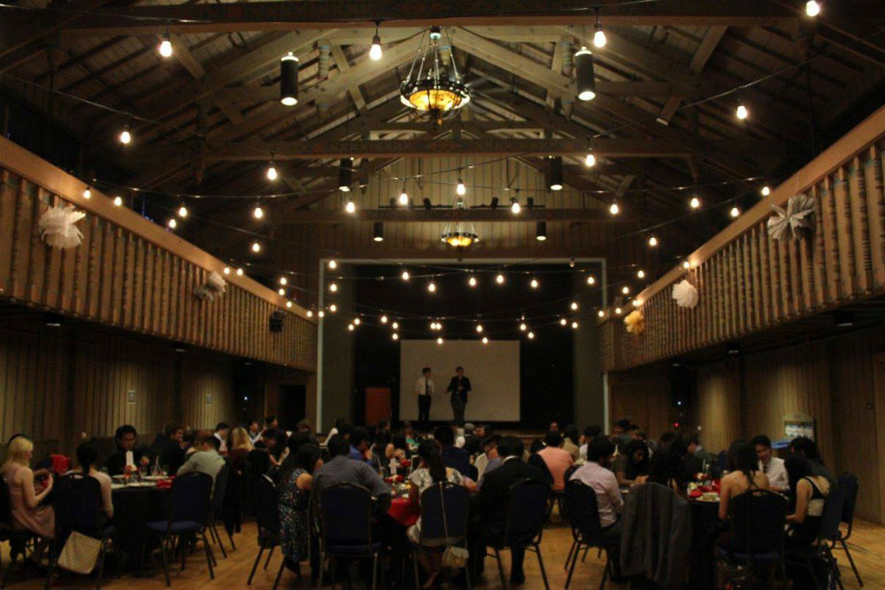
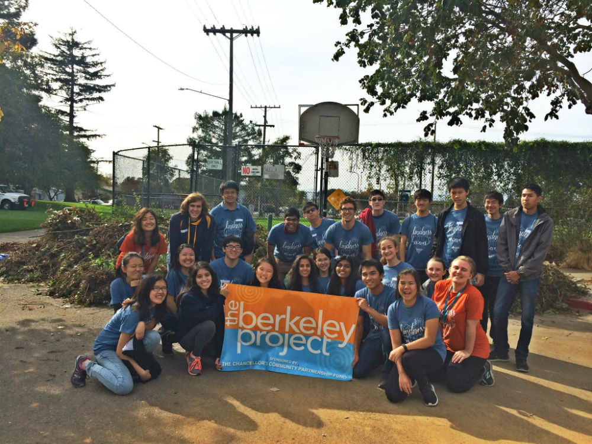
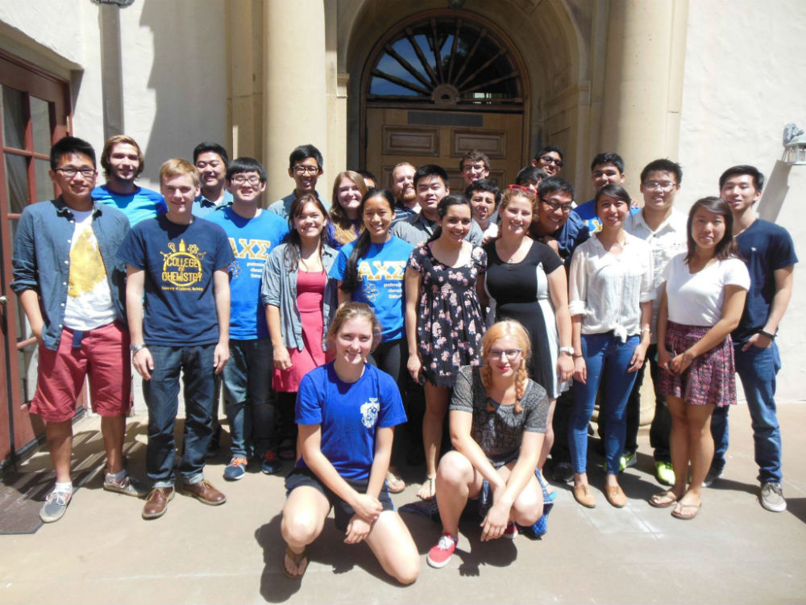

Professional
The professional committee is responsible for planning professional events, such as information sessions with companies like
Genentech and Chevron, and student and professor panels regarding research or graduate school. In addition, we work with the American
Chemical Society (ACS) to host seminars to show how chemistry is applied to different jobs and fields. We also volunteer
at ACS outreach events every semester, including Family Science Night. To support the College of Chemistry, we help out at their semesterly
events: AutumnFest and SpringFest. Our members-only workshop series, called ProTalks, teaches skills that can be applied to brothers'
academic and professional careers. Our two main networking events are Pizza with Professors in the Fall and Wine and Cheese in the
Spring, typically held in 775 Tan Hall.

ACS Family Science Night, Fall 2015

Grad School Panel, Fall 2015

Wine and Cheese, Spring 2014

AutumnFest, Fall 2014
Social/Banquet
The Social Committee plans fun activities for the brothers, including Assassins, frisbee on Memorial Glade, Korean barbeque, and weekend
trips to San Francisco. The brothers also bond at volunteering events, including Berkeley Project and Suicide Prevention
Walk. At the beginning of every semester, the Vice President and Social Chair plan an overnight retreat; in the past, we have gone to
Monterey Bay and Lake Tahoe. Recently, we have been hanging out with our fellow brothers from the Alpha Alpha Chapter at Stanford University!
Every year, the Banquet Committee organizes and executes an end-of-the-school-year banquet for members and alumni. It is a great event
for current members to connect with alumni and faculty and to reflect on the memories that were made during the year.

Retreat at Monterey Bay, Spring 2016

Banquet, Spring 2016

Berkeley Project, Fall 2015

Inter-chapter Social with Alpha Alpha, Summer 2015